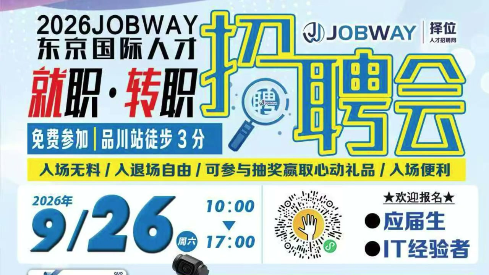

三个月前，我写过一篇《AI淘汰你时，从不会说再见》——隔壁软件部带着"全家桶"AI技术栈杀过来，抢了我正在做的项目，我还自我安慰"以后我只需要指指点点，不用吭哧吭哧"。
今天，反转来了。
先说结论：不是AI淘汰了我，而是那帮被AI"包装"出来的"资深技术者"，最后把烂摊子甩回了我手里。
在ChatGPT、Anthropic的Claude Code、Codex这些工具出来之前，我们会社专门的软件部门，招人招得非常辛苦。最惨的时候，那个部门里只剩部长一个人——名副其实的"光杆司令"。
自从ChatGPT、Claude Code、Codex这些工具火了之后，画风突变。
那个部门的技术者，而且清一色是"资深技术者"，一下子冒出来十几个，全是日本人，薪资也是照资深技术者的行情开的。
我们部门不是软件部门，是集成部门的售后，做的是上位系统的二次开发。当时我用低代码平台，撑出了一个"低配版"上位系统——先做了简单场景。会社问我复杂场景能不能干，我说当然能干，结果最后没让我干，把活儿转给了那个突然膨胀起来的软件部门。
软件部门接手之后，动作很快，很快就甩出了一个Demo。AI做出来的东西，看着非常花里胡哨，吸引眼球那种。我一开始以为，他们会趁机搭一套"全AI工程化"的软件开发架构出来。
结果万万没想到——他们部门做的事情，是把那个Demo，做得更demo了一下。哈哈哈。
最后，这个项目被转包给了一家派遣公司去实现。我靠，这他妈的把我真是惊呆了：AI时代，居然还有这种神操作。
你说你做不了，你就做不了呗？结果他们又去找了个外包。问题是，我的"低配版"本来就已经选型了一套架构，外包公司选的架构跟我的完全不一样——同一个产品，硬是要维护两套。
而且最后，派遣会社做出来的这套东西，使用者还是我。
你想想我有多痛苦，我有多迷茫，被他们这波"神操作"搞得有多迷糊。
我觉得，最终能够存活下去的人，一定是那种能够锲而不舍去拿到结果的人——而不是只完成整个过程的一部分，比如说自己就做个需求设计，剩下的甩给别人去做。不是这样，是要拿到整个结果。
顺便说说想进日本IT这一行的年轻人。其实在AI时代，年轻人的上升阶梯已经被从根子上、从底层给抽掉了——理论上讲，你已经没有上升阶梯了。
那为什么日本IT还有很多会社在招新人？因为日本企业还有一个传统的培养机制：找到人品和学习能力都过关的人，慢慢培养，成为自己企业未来的骨干——这给新人留了一个缓冲期。
但对新人来说，进来之后必须具备一个品质：能够锲而不舍地刨根问底，去追究事物的第一性原理，保持强烈的好奇心和探索欲望。只有这样的人，后面才有可能拿到结果。
9月26号，我认识的一位华人老大哥，要在品川搞一场线下华人招聘会。不光是面对新人，销售岗、技术岗都有；对那些能拿结果的资深技术者，也有大量岗位。感兴趣的朋友可以关注一下。

视频里聊得更细，感兴趣可以点开看看。